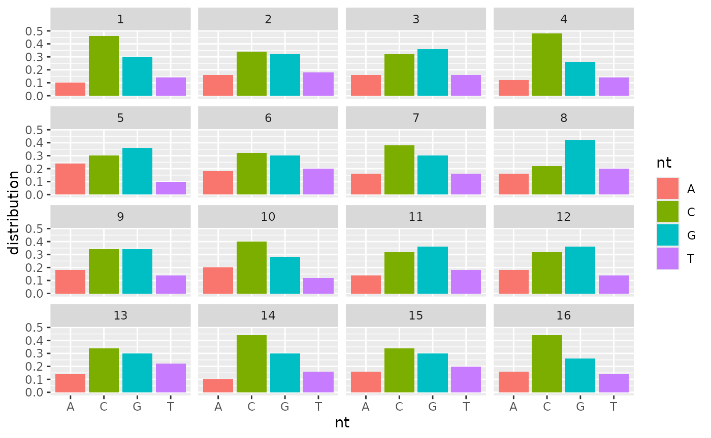

devtools::install_github("GenomeNet/deepG")
library(deepG)
library(magrittr)Introduction
The goal of the deepG package is to speed up the development of bioinformatical tools for sequence classification, homology detection and other bioinformatical tasks. The package offers several functions for
- Data (pre-) processing
- Deep learning architectures
- Model training
- Model evaluation
- Visualizing training progress
Create dummy data
We create two simple dummy training and validation data sets. Both consist of random ACGT sequences but the first category has a probability of 40% each for drawing G or C and the second has equal probability for each nucleotide (first category has around 80% GC content and second one around 50%).
set.seed(123)
vocabulary <- c("A", "C", "G", "T")
data_type <- c("train_1", "train_2", "val_1", "val_2")
for (i in 1:length(data_type)) {
temp_file <- tempfile()
assign(paste0(data_type[i], "_dir"), temp_file)
dir.create(temp_file)
if (i %% 2 == 1) {
header <- "high_gc"
prob <- c(0.1, 0.4, 0.4, 0.1)
} else {
header <- "equal_dist"
prob <- rep(0.25, 4)
}
fasta_name_start <- paste0(header, "_", data_type[i], "file")
create_dummy_data(file_path = temp_file,
num_files = 1,
seq_length = 10000,
num_seq = 1,
header = header,
prob = prob,
fasta_name_start = fasta_name_start,
vocabulary = vocabulary)
}Training
We can now train a model that can differentiate between the two categories. First, we can create our network architecture. We take an input size of 50 nucleotides. The model has one lstm layer with 16 cells and two dense layers with 8 and 2 neurons.
maxlen <- 50
model <- create_model_lstm_cnn(maxlen = maxlen,
layer_lstm = 16,
layer_dense = c(8, 2))## Loaded Tensorflow version 2.9.1## Model: "model"
## ________________________________________________________________________________
## Layer (type) Output Shape Param #
## ================================================================================
## input_1 (InputLayer) [(None, 50, 4)] 0
## lstm (LSTM) (None, 16) 1344
## dense (Dense) (None, 8) 136
## dense_1 (Dense) (None, 2) 18
## ================================================================================
## Total params: 1,498
## Trainable params: 1,498
## Non-trainable params: 0
## ________________________________________________________________________________Next we can train the model using the train_model function. Function will internally build a data generator for training.
hist <- train_model(model,
train_type = "label_folder",
run_name = "gc_model_1",
path = c(train_1_dir, train_2_dir),
path_val = c(val_1_dir, val_2_dir),
epochs = 4,
steps_per_epoch = 25, # one epoch = 25 batches
batch_size = 64,
step = 50, # take a sample every 50 nt
vocabulary_label = c("high_gc", "equal_dist"))## Training done.
plot(hist)
Evaluation
We can now evaluate the trained model on all the validation data
eval <- evaluate_model(path_input = c(val_1_dir, val_2_dir),
model = model,
batch_size = 100,
step = 25, # take a sample every 25 nt
vocabulary_label = list(c("high_gc", "equal_dist")),
mode = "label_folder",
evaluate_all_files = TRUE,
verbose = FALSE,
auc = TRUE,
auprc = TRUE)## Evaluate 399 samples for class high_gc.
## Evaluate 399 samples for class equal_dist.
eval## [[1]]
## [[1]]$confusion_matrix
## Truth
## Prediction high_gc equal_dist
## high_gc 388 2
## equal_dist 11 397
##
## [[1]]$accuracy
## [1] 0.9837093
##
## [[1]]$categorical_crossentropy_loss
## [1] 0.1159862
##
## [[1]]$AUC
## [1] 0.9986369
##
## [[1]]$AUPRC
## [1] 0.9986236We can check where our model made mistakes for the sequence with high GC content.
high_gc_file <- microseq::readFasta(list.files(val_1_dir, full.names = TRUE)[1])
high_gc_seq <- high_gc_file$Sequence
pred_high_gc <- predict_model(model = model,
sequence = high_gc_seq,
filename = NULL,
step = 25,
batch_size = 512,
verbose = TRUE,
return_states = TRUE,
mode = "label")## layer_name not specified. Using layer dense_1## Computing output for model at layer dense_1
## Model: "model_1"
## ________________________________________________________________________________
## Layer (type) Output Shape Param #
## ================================================================================
## input_1 (InputLayer) [(None, 50, 4)] 0
## lstm (LSTM) (None, 16) 1344
## dense (Dense) (None, 8) 136
## dense_1 (Dense) (None, 2) 18
## ================================================================================
## Total params: 1,498
## Trainable params: 1,498
## Non-trainable params: 0
## ________________________________________________________________________________
pred_df <- cbind(pred_high_gc$states, pred_high_gc$sample_end_position) %>%
as.data.frame()
names(pred_df) <- c("high_gc_conf", "equal_dist_conf", "sample_end_position")
head(pred_df)## high_gc_conf equal_dist_conf sample_end_position
## 1 0.95 0.05 50
## 2 0.97 0.03 75
## 3 0.97 0.03 100
## 4 0.96 0.04 125
## 5 0.97 0.03 150
## 6 0.97 0.03 175## high_gc_conf equal_dist_conf sample_end_position
## 1 0.18 0.82 800
## 2 0.28 0.72 1150
## 3 0.14 0.86 1950
## 4 0.13 0.87 2700
## 5 0.28 0.72 3000
## 6 0.14 0.86 3700
## 7 0.40 0.60 4425
## 8 0.33 0.67 4675
## 9 0.30 0.70 7875
## 10 0.17 0.83 8225
## 11 0.41 0.59 9925
if (nrow(wrong_pred) == 0) {
print("All predictions for high GC content class correct")
} else {
# extract samples where model was wrong
wrong_pred_seq <- vector("character", nrow(wrong_pred))
for (i in 1:length(wrong_pred_seq)) {
sample_end <- wrong_pred$sample_end_position[i]
sample_start <- sample_end - maxlen + 1
wrong_pred_seq[i] <- substr(high_gc_seq, sample_start, sample_end)
}
wrong_pred_seq
}## [1] "CCCACTTCGTGTCTATGCCGGACACGCCTCGATAGGCGCAGGCGATGGGC"
## [2] "ACAGGAGAGACCCTCGGTTGCCGGCGACGCCGTGTCGTTGGTAGGCCCAC"
## [3] "GCCCAACAAGGACGGTGAACTCCCCCGGGTACGGAAGAGGGTATGGCCGC"
## [4] "AGGAGTCCTCCTAGAGCTCATGGGTTGAGACGTGCCTCGACGCCCGACCT"
## [5] "CCCATTAGACCGTCCTGGCGGACACCCGTACGGGTGAGACCCTCCGGGTC"
## [6] "TGCTTATCATGGCCGCCCTGATGACGTGTCAGGGGGAGGACTGAGCGGGG"
## [7] "AGGGCTACCTGGCCGCCTGATAGGTGGAGACGTGTTCTGGCCGCCCTCGC"
## [8] "ATCCCGCATTCGCCGACGTCTCCACAGGAGGATCAGCGGGTCCGGGGCGA"
## [9] "CTACGGAACGTGGCTCCGAGCATCGGCGCATCGGCATGTGTCTGCCGGCG"
## [10] "GGCGGGCCCTTCAATTCTATAAGCGACGCCGCCCTTGTCTGACGCTGGGC"
## [11] "CACCGGCGTACCTGTTATAAAGTCGCCCGCGCTCCCCCGGGCGCACCACG"We can check the nucleotide distribution of those sequences
l <- list()
for (i in 1:length(wrong_pred_seq)) {
l[[i]] <- stringr::str_split(wrong_pred_seq[i], "") %>% table() %>% prop.table() %>% t() %>% as.matrix()
}
dist_matrix <- do.call(rbind, l)
dist_matrix## A C G T
## [1,] 0.16 0.34 0.32 0.18
## [2,] 0.16 0.32 0.36 0.16
## [3,] 0.24 0.30 0.36 0.10
## [4,] 0.18 0.32 0.30 0.20
## [5,] 0.16 0.38 0.30 0.16
## [6,] 0.16 0.22 0.42 0.20
## [7,] 0.12 0.32 0.36 0.20
## [8,] 0.18 0.34 0.34 0.14
## [9,] 0.14 0.32 0.36 0.18
## [10,] 0.14 0.34 0.30 0.22
## [11,] 0.16 0.44 0.26 0.14
df <- data.frame(distribution = as.vector(dist_matrix),
nt = factor(rep(vocabulary, each = nrow(dist_matrix))),
sample_id = rep(1:nrow(dist_matrix), 4))
ggplot(df, aes(fill=nt, y=distribution, x=nt)) +
geom_bar(position="dodge", stat="identity") + facet_wrap(~sample_id)